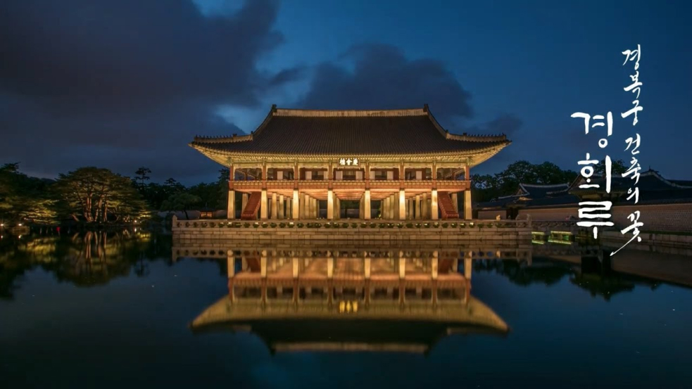

경회루
란?
경복궁
에 있는 누각으로, 조선시대에 연회를 하거나, 외국의 사신을 접견하던
곳으로, 지금의 청와대 영빈관에 해당된다.
경회루
왕실의 큰 연회를 베풀거나 외국 사신을 접대하던 곳으로 1867년 재건됐다. 높은 2층 누마루에 올라 서쪽으로 인왕산, 동쪽으로 궁궐의 아름다운
경관을 감상하며, 주위의 넓은 연못에서는 뱃놀이를 했다고 한다. 7x5칸, 바닥 면적 933m²(282평)로 현존 목조 건물 가운데 가장 큰 규모다. 2층 마루는 세 겹으로 구성됐는데,
중심 세 칸은 천지인(天地人)을, 그 바깥 열두 칸은 1년 열두 달을, 가장 바깥의 스물네 기둥은 ②24절기를 의미하는 등 동양적 우주관을 건축으로 지정했다. 중건 당시에 경회루(慶會樓)
연못에 두마리 ③청동 용을 넣었다는 기록이 있는데, 실제로 1997년 준설 공사 과정에서 발견됐다.
① 경회루
‘경회(慶會)’는 ‘임금과 신하가 덕으로써 만난다’는 뜻.
② 24절기
태양의 움직임에 따라 1년을 24로 나눈 날들이야. 절기에 따라 계절의 변화를 알 수 있어서 농사짓는 데 도움이 됐지. ‘입춘’,
‘우수’, ‘경칩’같은 한자 이름이 좀 어려워 보이는데, 뜻은 ‘봄이 오는 날’, ‘첫 봄비 오는 날’, ‘개구리 깨어나는 날’처럼 간단.
③ 청동 용
이건 경회루 옆에 드므를 만든 이유랑 같음. 불을 막기 위해.
※ 드므 : 소화기 같이 초기 화재 진압용 도구